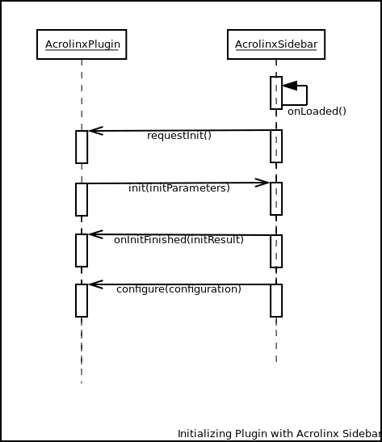
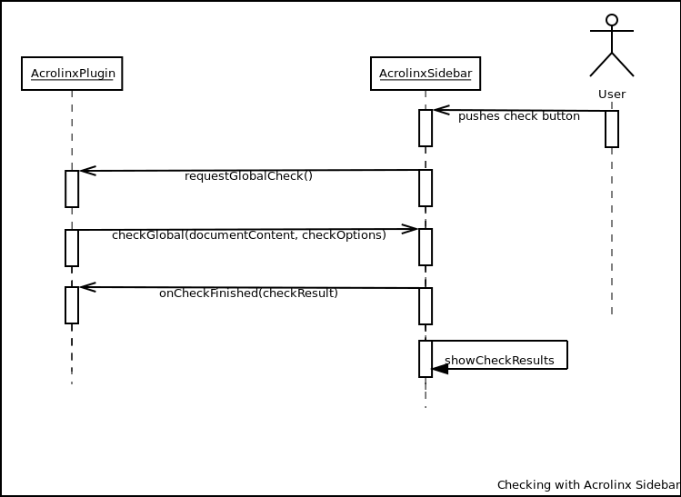

Acrolinx Sidebar SDK JS


Library for integration of the Acrolinx sidebar into a web application. The library contains adapters to use in your web integration. These are ready to use for: Editable divs, input elements and rich text editors like CKEditor and TinyMCE.
See: Getting Started with Custom Integrations
Examples
https://github.com/acrolinx/acrolinx-sidebar-demo
Live Demo
Installation
npm i -S acrolinx-sidebar-sdk Instructions for Contributing Code
Table of Content
Getting started with your own integration
The Acrolinx Sidebar
The Acrolinx sidebar is designed to show up beside the window where you edit your content. You use it for checking, reviewing, and correcting your content. To get an impression what the sidebar looks like in other integration check the Acrolinx Support Center.
Prerequisites
Please contact Acrolinx SDK support (sdk-support@acrolinx.com) for consulting and getting your integration certified. This sample works with a test license on an internal acrolinx server. This license is only meant for demonstration and developing purposes. Once you finished your integration you'll have to get a license for your integration from Acrolinx.
Please note that this an example for a integration into a web application only. Acrolinx offers different other SDKs for developing integrations.
Before you start developing your own integration, you might benefit from looking into the sidebar example.
Getting started with your own integration
The requirements to achieve this are:
- a mechanism and a container that can display the Acrolinx sidebar (usually JavaScript plugin mechanism)
- a mechanism that allows the sidebar to retrieve the text to be checked
- a mechanism that will allow the sidebar to replace specific parts of the text
All of the above are required by the Acrolinx Sidebar API and need to be provided by your integration. However Acrolinx provides some reference integrations with TinyMCE and CKEditor.
Let's take a look at how the sidebar is loaded and the typical interactions with an integration.
Loading
Load your host editor and your integration code.
Register your integration as an Acrolinx Plugin (Check the API Documentation for the Acrolinx Plugin Interface.) You'll find the API Documentation here.
var acrolinxPlugin = {...}- Load the sidebar and the referenced libraries code (usually sidebar.js, libs.js, sidebar.css).
Initializing
Once the sidebar has finished loading it will request the integration to initialize by calling
requestInit.The AcrolinxPlugin now must call
init.Once the init process has finished, the plug-in will be notified
onInitFinished.After initializing the sidebar will call
configureand push the latest configuration to the plug-in.
You'll find the API Documentation here.
Checking
If the user pushes the button "Check" (in the Acrolinx sidebar),
requestGlobalCheckis called.The acrolinxPlugin must call
checkGlobalto perform a check.When the check finished,
onCheckResultis called and the sidebar displays cards for the issues.

Other actions
- When the user clicks on a card the sidebar will invoke
selectRangeson the plugin. - When the user clicks on a replacement the sidebar will call
replaceRanges.
These are the most important interactions between the Acrolinx sidebar and your integration. Please check the sidebar plugin API for more information.
Sidebar API Documentation
Check our sidebar plugin API.
License
Copyright 2015-present Acrolinx GmbH
Licensed under the Apache License, Version 2.0 (the "License"); you may not use this file except in compliance with the License. You may obtain a copy of the License at
http://www.apache.org/licenses/LICENSE-2.0
Unless required by applicable law or agreed to in writing, software distributed under the License is distributed on an "AS IS" BASIS, WITHOUT WARRANTIES OR CONDITIONS OF ANY KIND, either express or implied. See the License for the specific language governing permissions and limitations under the License.
For more information visit: http://www.acrolinx.com